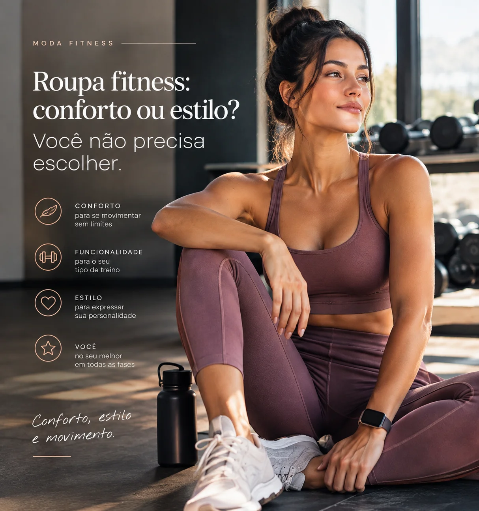
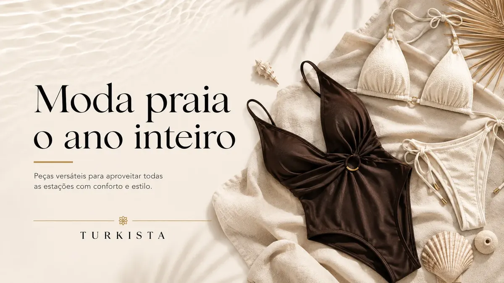
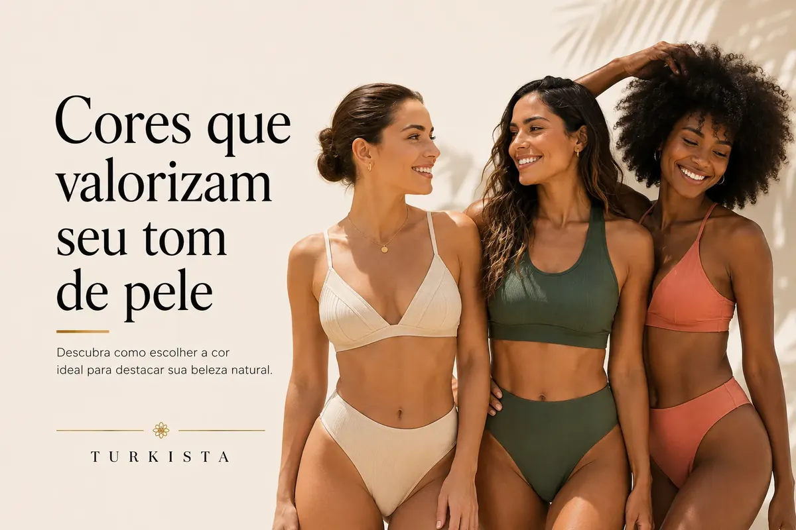
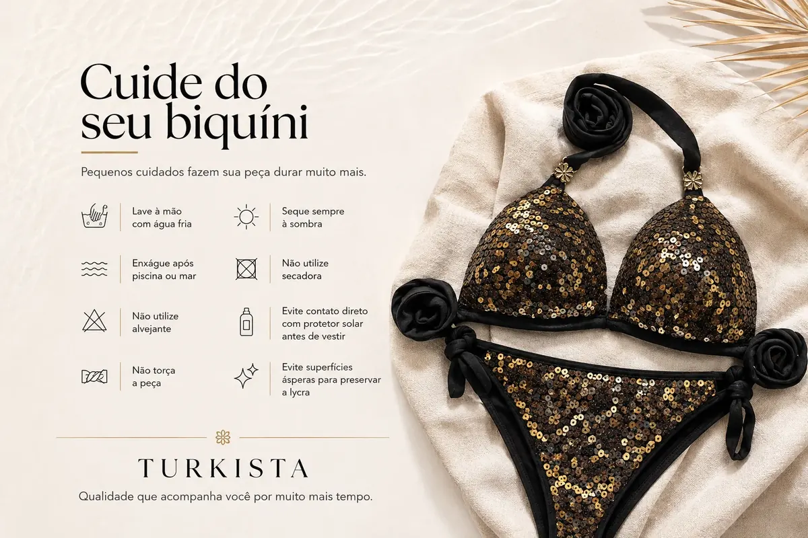

Roupa fitness: conforto ou estilo? Você não precisa escolher
Por muito tempo, escolher uma roupa para treinar parecia significar optar entre duas coisas: conforto ou estilo.

Por muito tempo, escolher uma roupa para treinar parecia significar optar entre duas coisas: **conforto ou estilo**. Ou a peça era confortável, mas sem graça, ou era bonita, mas não acompanhava os movimentos do corpo.
Hoje, essa escolha ficou para trás.
A moda fitness evoluiu e trouxe peças que unem **tecnologia, conforto, funcionalidade e personalidade**. Afinal, se você vai passar horas usando uma roupa, por que não escolher uma que faça você se sentir bem e ainda valorize o seu estilo?
Conforto é essencial
Durante o treino, a roupa precisa acompanhar o corpo — e não atrapalhar seus movimentos.
Uma boa peça fitness deve oferecer elasticidade, liberdade de movimento e uma modelagem que se adapte ao corpo. Tecidos com boa respirabilidade também ajudam a manter a pele mais confortável durante atividades de maior intensidade.
A escolha da peça certa faz diferença principalmente em exercícios que exigem muitos movimentos, como musculação, corrida, funcional, dança, yoga e pilates.
**Quando a roupa acompanha você, o treino fica muito mais confortável.**
Mas e o estilo?
Quem disse que roupa de academia precisa ser básica?
A moda fitness ganhou espaço justamente porque passou a valorizar também a expressão individual. Cores marcantes, recortes, texturas, diferentes modelagens e combinações permitem criar looks que têm tudo a ver com a personalidade de quem usa.
Uma legging pode ser muito mais do que uma peça para treinar. Um top pode ganhar destaque no look. Um conjunto pode transmitir uma estética mais sofisticada, vibrante, minimalista ou ousada.
O importante é encontrar peças que façam sentido para **você**.
A peça perfeita é aquela que une os dois
Conforto e estilo não são opostos.
Uma roupa fitness pode ter um design bonito e, ao mesmo tempo, oferecer sustentação, flexibilidade e segurança para os movimentos.
Na hora de escolher, vale observar alguns detalhes:
**✔ Modelagem:** a peça precisa vestir bem sem limitar os movimentos.
**✔ Tecido:** procure materiais que ofereçam elasticidade e conforto para a atividade que você pratica.
**✔ Sustentação:** tops e peças de maior suporte devem ser escolhidos de acordo com a intensidade do exercício.
**✔ Transparência:** principalmente em leggings e shorts, é importante verificar como o tecido se comporta durante os movimentos.
**✔ Seu estilo:** escolha cores, cortes e combinações que façam você se sentir confiante.
Seu look também faz parte da experiência
Existe algo especial em vestir uma roupa que faz você se sentir bem antes mesmo de começar o treino.
Não significa que uma roupa bonita vai transformar seu desempenho. Mas sentir-se confortável e confiante pode tornar o momento do exercício mais agradável e fazer com que você aproveite melhor a experiência.
A roupa deixa de ser apenas uma necessidade e passa a fazer parte do seu estilo de vida.
### Afinal, por que escolher?
Você não precisa escolher entre **conforto e estilo**.
A moda fitness atual permite que você tenha liberdade para se movimentar, conforto para treinar e um visual que combine com a sua personalidade.
Porque cuidar do corpo também pode ser uma experiência de estilo.
**Vista o que faz você se sentir bem. Treine do seu jeito. E não abra mão de nenhum dos dois.**
Ficou com dúvida ou quer ver essa peça de perto?
Fala com a gente pelo WhatsApp — respondemos rapidinho e ajudamos a encontrar a peça certa.
Falar no WhatsAppOutros artigos da Revista Turkista

Moda praia o ano inteiro: como usar além do verão
Peças versáteis que acompanham você em qualquer estação do ano.
Ler artigo
Cores que valorizam seu tom de pele
Um guia rápido para escolher a cor certa da próxima peça Turkista.
Ler artigo
Como cuidar do seu biquíni e fazer durar muito mais
Dicas práticas para conservar a cor, a elasticidade e o caimento das peças.
Ler artigo